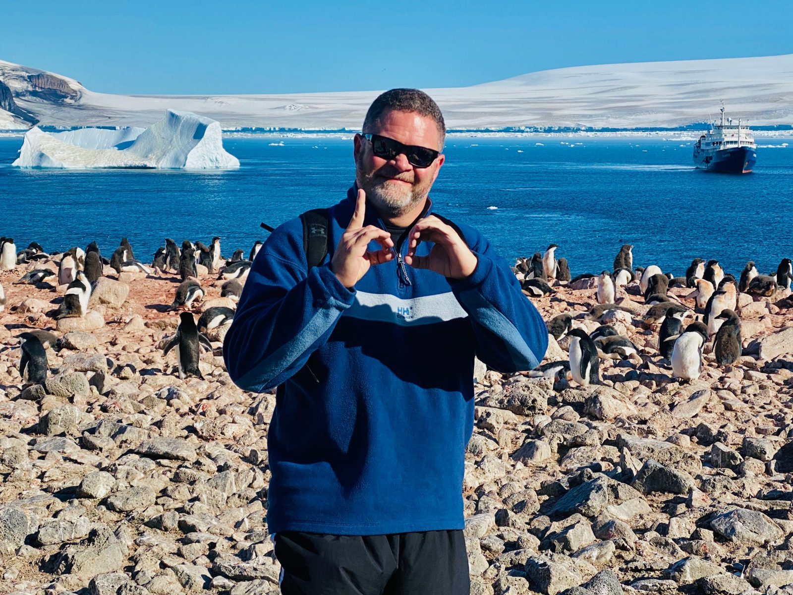

Darrell Seale has taught respect for the marine environment in every scuba course since he began instructing in 1999. For the Abu Dhabi-based instructor, conservation is not a separate lecture; it is built into the skills every diver learns.
Recreational divers interact with fragile ecosystems on every dive. A careless fin kick can break coral that took decades to grow, and a diver chasing a photograph can stress the animal they came to see. Across more than 2,500 dives and 300 certified students, Seale has made the case that good diving technique and good conservation are the same thing.
Buoyancy Control Comes First
The most important conservation skill is buoyancy control. A diver who can hover motionless keeps hands, knees, and equipment off the reef and avoids stirring up sediment that smothers marine life. That is why he treats buoyancy as a skill to practice on every dive, not a box to tick during certification.
Streamlined equipment matters too. Dangling gauges and loose hoses drag across coral and snag on structures, and clipping gear close to the body protects both the diver and the environment.
Look, Don’t Touch
Darrell Ray Seale teaches students to observe marine life without touching, feeding, or chasing it. Animals left undisturbed behave naturally, which makes for a better dive as well as a healthier ecosystem. The same rule applies to collecting shells or souvenirs, which removes material that reefs and the creatures living on them depend on.
Respect also extends to local rules. Many dive destinations protect sensitive areas, limit diver numbers, or require registered guides, and following those rules supports the communities working to keep reefs healthy for future divers.
Conservation Beyond the Dive
Travel to 142 countries, including a voyage to the Antarctic coast, where visitors follow strict wildlife protocols, has given Seale a wide view of how different places protect their natural environments. The lesson is consistent: ecosystems are easier to damage than to restore, and visitors share responsibility for them.
These habits begin in the first lesson, as described in a quarter century of scuba teaching, and they apply equally to adaptive diving programs, where every participant learns the same respect for the water.
Conclusion
Marine conservation, in Darrell Seale’s teaching, is less about rules than about habits that become second nature, and divers who master them protect every site they visit. The wider story behind that philosophy is told in the biography of Darrell Seale.